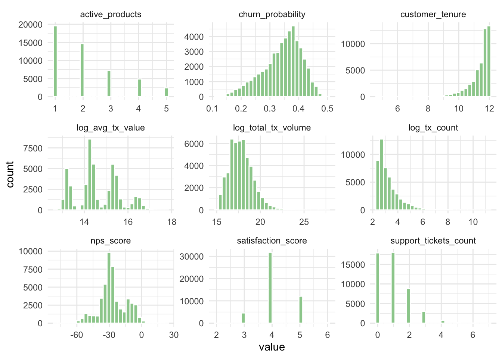
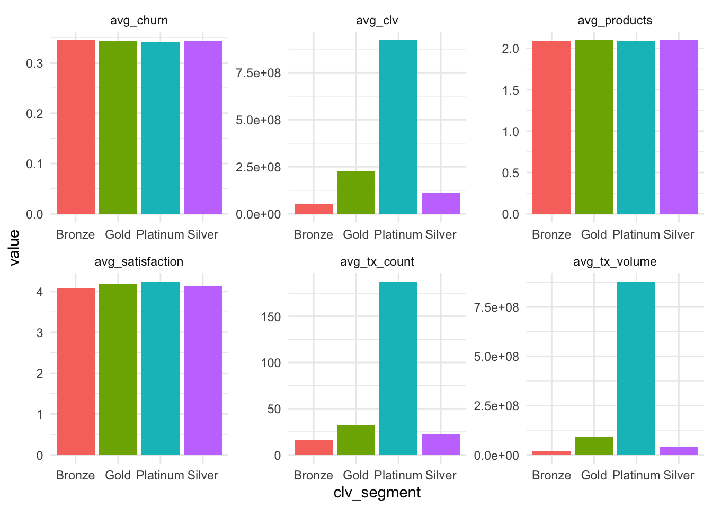
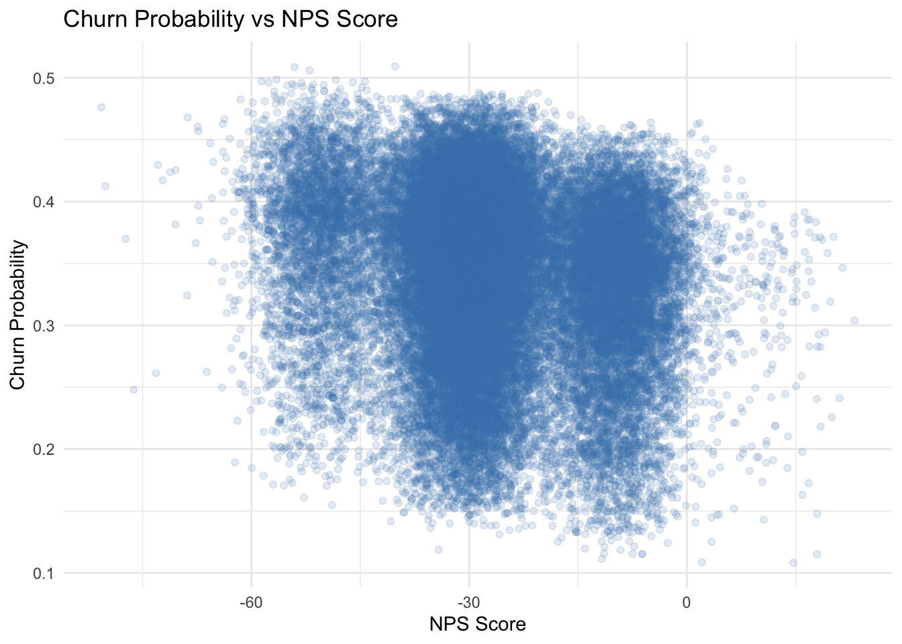
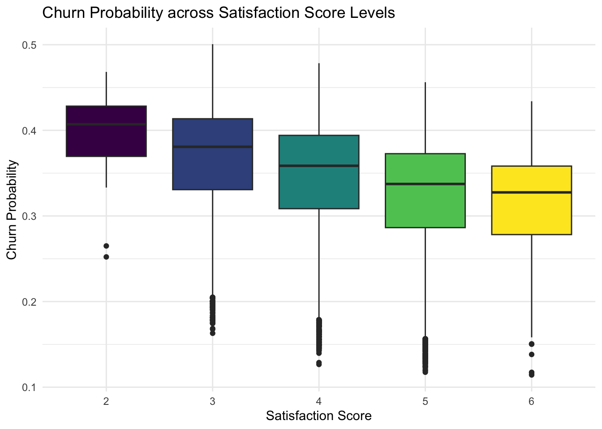
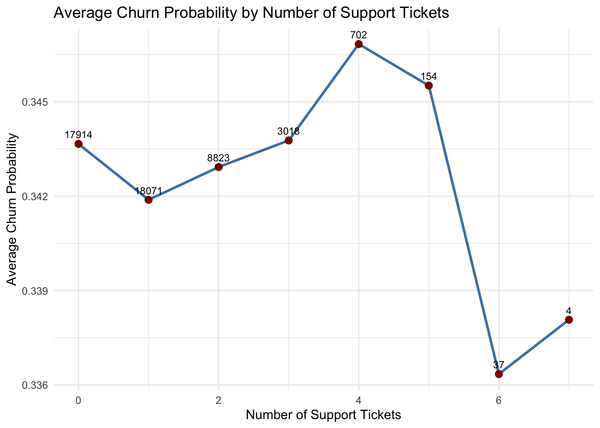
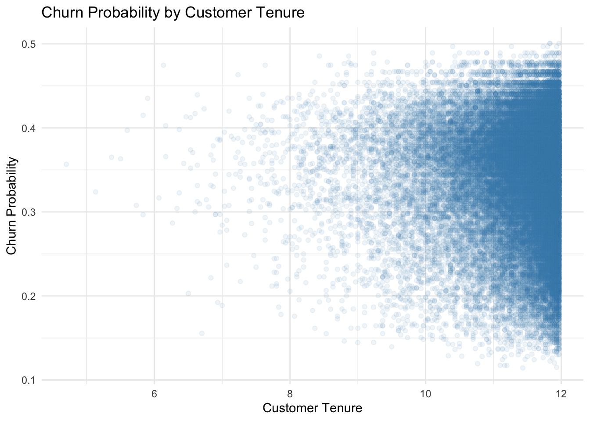
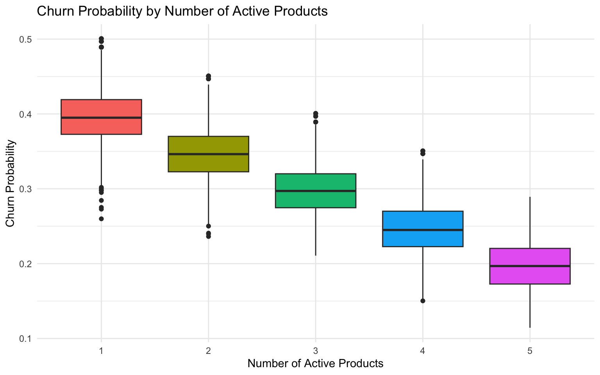

pacman::p_load(tidyverse, ggstatsplot,ggplot2, plotly, scales,corrplot)Exploratory Data Analysis
1. Installing and launching required R packages
2. Loading the data
data_cleaned <- read_csv("data/colombia_customers_processed.csv")3. Distribution of Key Variables
data_cleaned %>%
mutate(
log_total_tx_volume = log1p(total_tx_volume),
log_tx_count = log1p(tx_count),
log_avg_tx_value = log1p(avg_tx_value)
) %>%
select(
churn_probability,
customer_tenure,
satisfaction_score,
nps_score,
support_tickets_count,
active_products,
log_total_tx_volume,
log_tx_count,
log_avg_tx_value
) %>%
pivot_longer(cols = everything(), names_to = "variable", values_to = "value") %>%
ggplot(aes(x = value)) +
geom_histogram(bins = 30, fill = "darkseagreen3", color = "white") +
facet_wrap(~ variable, scales = "free") +
theme_minimal()
5. Supplementary Check: CLV Segment Profiling
profile_summary <- data_cleaned %>%
group_by(clv_segment) %>%
summarise(
avg_clv = mean(customer_lifetime_value, na.rm = TRUE),
avg_tx_volume = mean(total_tx_volume, na.rm = TRUE),
avg_tx_count = mean(tx_count, na.rm = TRUE),
avg_products = mean(active_products, na.rm = TRUE),
avg_satisfaction = mean(satisfaction_score, na.rm = TRUE),
avg_churn = mean(churn_probability, na.rm = TRUE)
)
profile_summary# A tibble: 4 × 7
clv_segment avg_clv avg_tx_volume avg_tx_count avg_products avg_satisfaction
<chr> <dbl> <dbl> <dbl> <dbl> <dbl>
1 Bronze 4.97e7 17001332. 16.2 2.09 4.09
2 Gold 2.27e8 90990119. 32.6 2.10 4.17
3 Platinum 9.22e8 880338268. 188. 2.09 4.25
4 Silver 1.14e8 41548005. 22.6 2.10 4.14
# ℹ 1 more variable: avg_churn <dbl>profile_summary %>%
pivot_longer(-clv_segment, names_to = "metric", values_to = "value") %>%
ggplot(aes(x = clv_segment, y = value, fill = clv_segment)) +
geom_col(show.legend = FALSE) +
facet_wrap(~ metric, scales = "free") +
theme_minimal()
6. Churn Risk Analysis
#| message: false
#| warning: false
#| fig-width: 12
#| fig-height: 5
p_nps <- ggplot(data_cleaned, aes(x = nps_score, y = churn_probability)) +
geom_jitter(alpha = 0.15, width = 1, height = 0.01, color = "steelblue") +
geom_smooth(method = "loess", se = TRUE, color = "darkred") +
labs(
title = "Churn Probability vs NPS Score",
x = "NPS Score",
y = "Churn Probability"
) +
theme_minimal()
p_nps`geom_smooth()` using formula = 'y ~ x'Warning: Failed to fit group -1.
Caused by error in `predLoess()`:
! workspace required (3561395553) is too large probably because of setting 'se = TRUE'.
#| message: false
#| warning: false
#| fig-width: 12
#| fig-height: 5
p_satisfaction_box <- ggplot(
data_cleaned,
aes(
x = factor(satisfaction_score, ordered = TRUE),
y = churn_probability,
fill = factor(satisfaction_score, ordered = TRUE)
)
) +
geom_boxplot(show.legend = FALSE) +
labs(
title = "Churn Probability across Satisfaction Score Levels",
x = "Satisfaction Score",
y = "Churn Probability"
) +
theme_minimal()
p_satisfaction_box
7. Churn Probability by Number of Support Tickets
#| message: false
#| warning: false
#| fig-width: 8
#| fig-height: 5
support_summary <- data_cleaned %>%
group_by(support_tickets_count) %>%
summarise(
avg_churn = mean(churn_probability, na.rm = TRUE),
n = n()
)
ggplot(support_summary, aes(x = support_tickets_count, y = avg_churn)) +
geom_line(color = "steelblue", linewidth = 1) +
geom_point(color = "darkred", size = 2.5) +
geom_text(aes(label = n), vjust = -0.8, size = 3) +
labs(
title = "Average Churn Probability by Number of Support Tickets",
x = "Number of Support Tickets",
y = "Average Churn Probability"
) +
theme_minimal()
8. Customer Tenure vs Churn
ggplot(
data_cleaned,
aes(
x = customer_tenure,
y = churn_probability
)
) +
geom_point(alpha = 0.08, color = "steelblue") +
geom_smooth(method = "loess", se = TRUE, color = "darkred") +
labs(
title = "Churn Probability by Customer Tenure",
x = "Customer Tenure",
y = "Churn Probability"
) +
theme_minimal()`geom_smooth()` using formula = 'y ~ x'Warning: Failed to fit group -1.
Caused by error in `predLoess()`:
! workspace required (3561395553) is too large probably because of setting 'se = TRUE'.
9. Active Products vs Churn
ggplot(
data_cleaned,
aes(
x = factor(active_products),
y = churn_probability,
fill = factor(active_products)
)
) +
geom_boxplot(show.legend = FALSE) +
labs(
title = "Churn Probability by Number of Active Products",
x = "Number of Active Products",
y = "Churn Probability"
) +
theme_minimal()